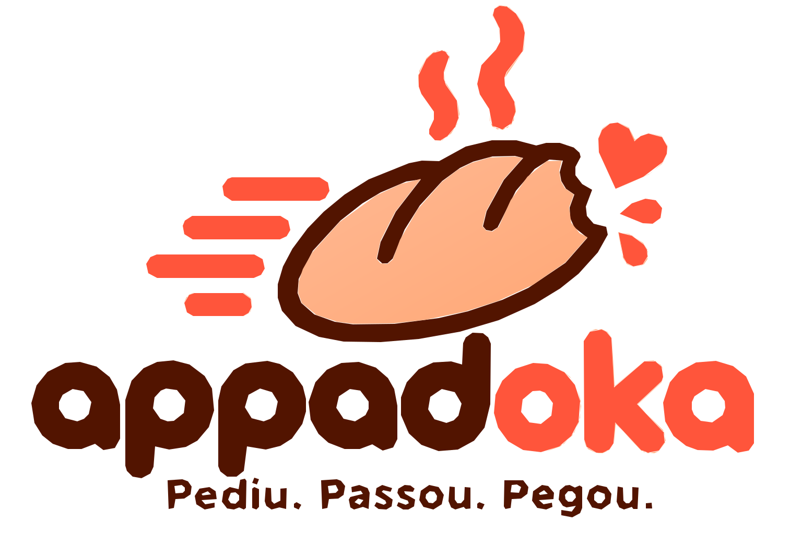
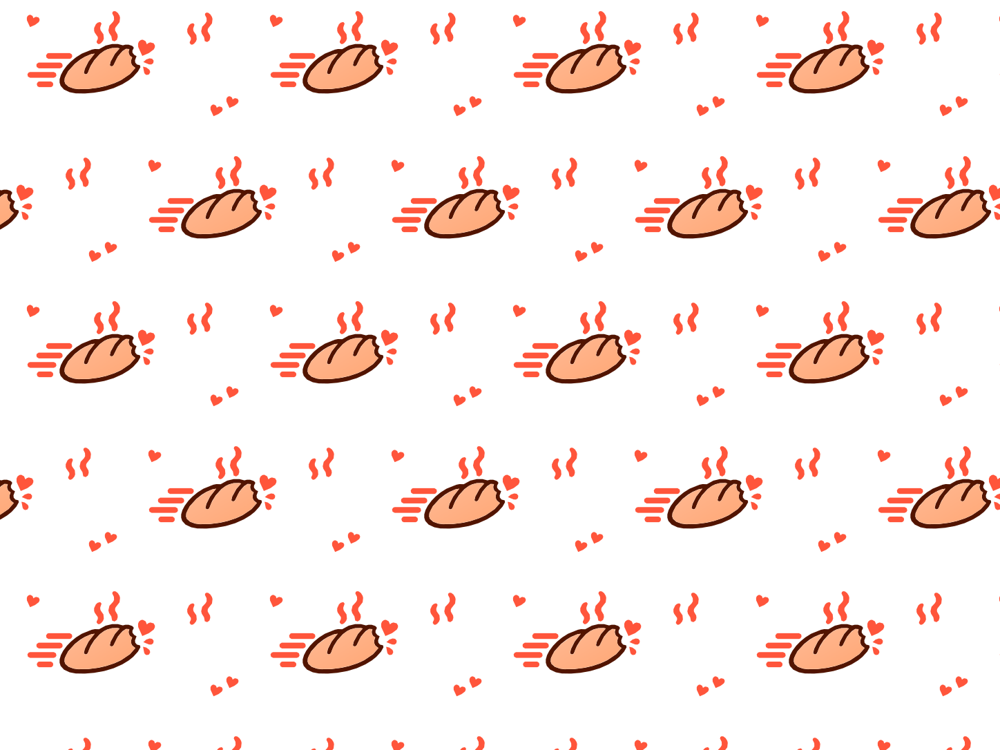

OFICIAL
Logo Appadoka aprovada
Logo completa, pão com mordida, wordmark e slogan
assets/brand/oficiais/logo-appadoka-aprovada.svgInventário conferido no repositório ds-appadoka-previa, branch main: 6 SVGs encontrados, sendo 3 oficiais, 1 revisão e 2 estudos antigos.
Arquivos aprovados e classificados como oficiais neste repositório.

Logo completa, pão com mordida, wordmark e slogan
assets/brand/oficiais/logo-appadoka-aprovada.svg
Textura vetorial repetível sem fundo
assets/brand/oficiais/16-padrao-coracoes-vapor.svg
Mesma textura com fundo creme
assets/brand/oficiais/16-padrao-coracoes-vapor-creme.svgArquivo em revisão, não confundir com o aprovado.

Cópia intermediária mantida para rastreabilidade
assets/brand/revisoes/16-padrao-coracoes-vapor.svgExperimentos anteriores, reprovados. Não utilizar no aplicativo.
Tentativa de reconstrução anterior à logo aprovada
vector-studies/bread-icon-v7-study.svgTentativa de grafismos anterior aos recortes corrigidos
vector-studies/graphic-elements-v7-study.svgExistem ainda 18 SVGs em appadoka-beta/public/brand/oficiais/, no repositório privado do aplicativo. Eles não fazem parte dos seis SVGs acima e não foram copiados para o repositório público.
Para avaliá-los, acesse a pasta original no GitHub, com sua conta autorizada.